20.66 ZTRANS: Z-Transform Package
This package is an implementation of the Z-transform of a sequence. This is the discrete
analogue of the Laplace Transform.
Authors: Wolfram Koepf and Lisa Temme.
20.66.1 Z-Transform
The Z-Transform of a sequence {fn} is the discrete analogue of the Laplace Transform,
and
|
𝒵{fn} = F(z) = ∑
n=0∞f
nz−n.
|
This series converges in the region outside the circle |z| = |z0| = limsupn→∞
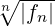
.
| SYNTAX: ztrans(fn, n, z) | where fn is an expression, and n,z |
| | are identifiers. |
20.66.2 Inverse Z-Transform
The calculation of the Laurent coefficients of a regular function results in the following
inverse formula for the Z-Transform:
If F(z) is a regular function in the region |z| > ρ then ∃ a sequence {fn} with
𝒵{fn} = F(z) given by
|
fn = 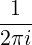 ∮
F(z)zn−1dz
|
| SYNTAX: invztrans(F(z), z, n) | where F(z) is an expression, |
| | and z,n are identifiers. |
20.66.3 Input for the Z-Transform
This package can compute the Z-Transforms of the following list of functions fn, and
certain combinations thereof.
| 1 | eαn | 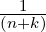 |
| 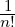 | 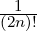 | 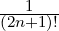 |
| 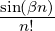 | sin(αn + ϕ) | eαn sin(βn) |
| 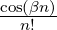 | cos(αn + ϕ) | eαn cos(βn) |
| 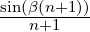 | sinh(αn + ϕ) | 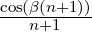 |
| cosh(αn + ϕ) | 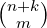 |
Other Combinations
| Linearity | 𝒵{afn + bgn} = a𝒵{fn} + b𝒵{gn} |
| Multiplication by n | 𝒵{nk ⋅ fn} = −z 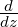 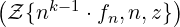 |
| Multiplication by λn | 𝒵{λn ⋅ fn} = F 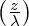 |
| Shift Equation | 𝒵{fn+k} = zk 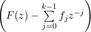 |
| Symbolic Sums | 𝒵 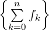 = 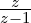 ⋅𝒵{fn} |
| |
|
| |
| |
| | 𝒵 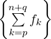 combination of the above |
where k,λ ∈N∖{0}; and a,b are variables or fractions; and p,q ∈Z or are functions of
n; and α,β and ϕ are angles in radians.
20.66.4 Input for the Inverse Z-Transform
This package can compute the Inverse Z-Transforms of any rational function,
whose denominator can be factored over Q, in addition to the following list of
F(z).
sin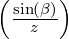 e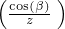
| cos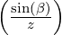 e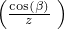
|
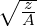 sin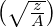 | |
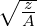 sinh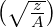 | |
| |
|
|
where k,λ ∈N ∖{0} and A,B are fractions or variables (B > 0) and α,β, and ϕ are
angles in radians.
20.66.5 Application of the Z-Transform
Solution of difference equations
In the same way that a Laplace Transform can be used to solve differential equations, so
Z-Transforms can be used to solve difference equations.
Given a linear difference equation of k-th order
with initial conditions f0 = h0, f1 = h1, …, fk−1 = hk−1 (where hj are given), it is
possible to solve it in the following way. If the coefficients a1,…,ak are constants, then
the Z-Transform of (20.94) can be calculated using the shift equation, and results in a
solvable linear equation for 𝒵{fn}. Application of the Inverse Z-Transform then results
in the solution of (20.94).
If the coefficients a1,…,ak are polynomials in n then the Z-Transform of (20.94)
constitutes a differential equation for 𝒵{fn}. If this differential equation can be solved
then the Inverse Z-Transform once again yields the solution of (20.94). Some examples
of these methods of solution can be found in §20.66.6.
20.66.6 EXAMPLES
Here are some examples for the Z-Transform
1: ztrans((-1)^n*n^2,n,z);
z*( - z + 1)
---------------------
3 2
z + 3*z + 3*z + 1
2: ztrans(cos(n*omega*t),n,z);
z*(cos(omega*t) - z)
---------------------------
2
2*cos(omega*t)*z - z - 1
3: ztrans(cos(b*(n+2))/(n+2),n,z);
z
z*( - cos(b) + log(------------------------------)*z)
2
sqrt( - 2*cos(b)*z + z + 1)
4: ztrans(n*cos(b*n)/factorial(n),n,z);
cos(b)/z
(e
sin(b) sin(b)
*(cos(--------)*cos(b) - sin(--------)*sin(b)))/z
z z
5: ztrans(sum(1/factorial(k),k,0,n),n,z);
1/z
e *z
--------
z - 1
6: operator f$
7: ztrans((1+n)^2*f(n),n,z);
2
df(ztrans(f(n),n,z),z,2)*z - df(ztrans(f(n),n,z),z)*z
+ ztrans(f(n),n,z)
Here are some examples for the Inverse Z-Transform
8: invztrans((z^2-2*z)/(z^2-4*z+1),z,n);
n n n
(sqrt(3) - 2) *( - 1) + (sqrt(3) + 2)
-----------------------------------------
2
9: invztrans(z/((z-a)*(z-b)),z,n);
n n
a - b
---------
a - b
10: invztrans(z/((z-a)*(z-b)*(z-c)),z,n);
n n n n n n
a *b - a *c - b *a + b *c + c *a - c *b
-----------------------------------------
2 2 2 2 2 2
a *b - a *c - a*b + a*c + b *c - b*c
11: invztrans(z*log(z/(z-a)),z,n);
n
a *a
-------
n + 1
12: invztrans(e^(1/(a*z)),z,n);
1
-----------------
n
a *factorial(n)
13: invztrans(z*(z-cosh(a))/(z^2-2*z*cosh(a)+1),z,n);
cosh(a*n)
Examples: Solutions of Difference Equations
-
I
- (See [BS81], p. 651, Example 1).
Consider the homogeneous linear difference equation
|
fn+5 − 2fn+3 + 2fn+2 − 3fn+1 + 2fn = 0
|
with initial conditions f0 = 0, f1 = 0, f2 = 9, f3 = −2, f4 = 23. The Z-Transform of
the left hand side can be written as F(z) = P(z)∕Q(z) where P(z) = 9z3 − 2z2 + 5z
and Q(z) = z5 − 2z3 + 2z2 − 3z + 2 = (z − 1)2(z + 2)(z2 + 1), which can be
inverted to give
|
fn = 2n + (−2)n − cos 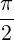 n.
|
The following REDUCE session shows how the present package can be used
to solve the above problem.
1: operator f;
2: f(0):=0$ f(1):=0$ f(2):=9$ f(3):=-2$ f(4):=23$
7: equation :=
ztrans(f(n+5)-2*f(n+3)+2*f(n+2)-3*f(n+1)+2*f(n),n,z);
5
equation := ztrans(f(n),n,z)*z
3
- 2*ztrans(f(n),n,z)*z
2
+ 2*ztrans(f(n),n,z)*z
- 3*ztrans(f(n),n,z)*z
3 2
+ 2*ztrans(f(n),n,z) - 9*z + 2*z
- 5*z
8: ztransresult:=solve(equation,ztrans(f(n),n,z));
ztransresult :=
2
z*(9*z - 2*z + 5)
{ztrans(f(n),n,z)=----------------------------}
5 3 2
z - 2*z + 2*z - 3*z + 2
9: result:=invztrans(part(first(ztransresult),2),z,n);
result :=
n n n n n
- i *( - 1) + 2*( - 1) *2 - i + 4*n
-----------------------------------------
2
-
II
- (See [BS81], p. 651, Example 2).
Consider the inhomogeneous difference equation:
with initial conditions f0 = 0, f1 = 1. Giving
| F(z) | = 𝒵{1} 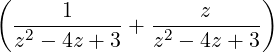 | |
|
| = 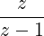 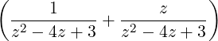 . | | |
The Inverse Z-Transform results in the solution
fn =  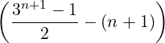 .
|
The following REDUCE session shows how the present package can be used to
solve the above problem.
10: clear(f)$ operator f$ f(0):=0$ f(1):=1$
14: equation:=ztrans(f(n+2)-4*f(n+1)+3*f(n)-1,n,z);
3
equation := (ztrans(f(n),n,z)*z
2
- 5*ztrans(f(n),n,z)*z
+ 7*ztrans(f(n),n,z)*z
2
- 3*ztrans(f(n),n,z) - z )/(z - 1)
15: ztransresult:=solve(equation,ztrans(f(n),n,z));
ztransresult :=
2
z
{ztrans(f(n),n,z)=---------------------}
3 2
z - 5*z + 7*z - 3
16: result:=invztrans(part(first(ztransresult),2),z,n);
n
3*3 - 2*n - 3
result := ----------------
4
-
III
- Consider the following difference equation, which has a differential equation for
𝒵{fn}.
with initial conditions f0 = 1, f1 = 1. It can be solved in REDUCE using
the present package in the following way.
17: clear(f)$ operator f$ f(0):=1$ f(1):=1$
21: equation:=ztrans((n+1)*f(n+1)-f(n),n,z);
equation :=
2
- (df(ztrans(f(n),n,z),z)*z + ztrans(f(n),n,z))
22: operator tmp;
23: equation:=sub(ztrans(f(n),n,z)=tmp(z),equation);
2
equation := - (df(tmp(z),z)*z + tmp(z))
24: load_package(odesolve);
25: ztransresult:=odesolve(equation,tmp(z),z);
1/z
ztransresult := {tmp(z)=e *arbconst(1)}
39: preresult :=
invztrans(part(first(ztransresult),2),z,n);
arbconst(1)
preresult := --------------
factorial(n)
40: solve({sub(n=0,preresult)=f(0),
sub(n=1,preresult)=f(1)},
arbconst(1));
{arbconst(1)=1}
41: result:=preresult where ws;
1
result := --------------
factorial(n)